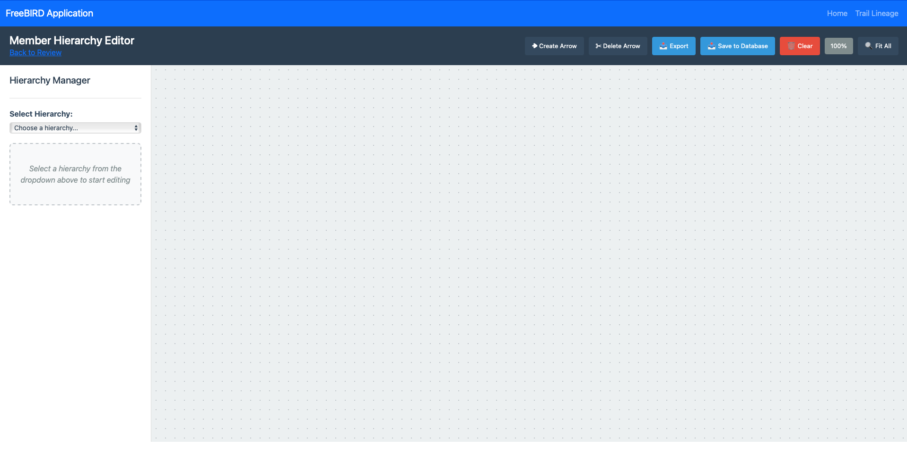

Feature Overview
The Member Hierarchy Editor is an intuitive visual tool within Eclipse Free BIRD Tools designed for creating, managing, and visualizing hierarchical relationships between data members. This drag-and-drop interface enables users to build complex parent-child relationships and organizational structures essential for regulatory data taxonomy and reporting frameworks.
Purpose
The Member Hierarchy Editor addresses the critical need for structured data organization in regulatory environments by providing:
- Visual Hierarchy Management: Create and modify complex data relationships through an intuitive interface
- Drag-and-Drop Functionality: Easily organize members without complex coding or configuration
- Export Capabilities: Share hierarchy structures across systems and teams
Data architects and compliance teams rely on this feature to maintain organized, compliant data structures that support accurate regulatory reporting and data governance initiatives.
Getting Started
Prerequisites
Before using the Member Hierarchy Editor, ensure:
- Access to the FreeBIRD Application with appropriate permissions
- Understanding of your organization's data taxonomy requirements
- Knowledge of the hierarchical relationships needed for your use case
- Familiarity with regulatory reporting structures if applicable
Accessing the Editor
Navigate to the FreeBIRD Application and access the Member Hierarchy Editor from the main dashboard. The interface provides a visual workspace for creating and managing hierarchical relationships.

Step-by-Step Guide
Understanding the Interface
The Member Hierarchy Editor consists of several key components:
Control Panel (Top Right)
- Create Arrow (White icon): Establishes parent-child relationships between nodes
- Delete Arrow (White icon): Removes existing relationships between nodes
- Export (Blue): Exports the hierarchy structure to external formats
- Save to Database (Blue): Persists the current hierarchy to the database
- Clear (Red): Resets the workspace and removes all unsaved changes
- Progress Indicator: Shows completion status percentage
- Fit All (White): Adjusts zoom to display the entire hierarchy
Left Panel - Hierarchy Manager
- Select Hierarchy: Dropdown menu to choose from available hierarchies
- Search Members: Text input for filtering available members
- Member List: Organized by status (Not in Hierarchy, In Hierarchy, etc.)
Central Workspace
- Visual Canvas: Drag-and-drop area for building hierarchies
- Node Representation: Visual elements representing data members
- Relationship Lines: Arrows showing parent-child connections
Creating Hierarchical Relationships
Step 1: Select Working Hierarchy
- Use the Select Hierarchy dropdown to choose the hierarchy you want to edit
- The current selection appears in the status indicator
- Available members populate in the left panel
Step 2: Add Members to Hierarchy
- Locate desired members in the "Not in Hierarchy" section
- Use the search function to filter large member lists
- Drag members from the left panel to the central workspace
- Members appear as visual nodes on the canvas
Step 3: Create Parent-Child Relationships
- Click the Create Arrow button to activate relationship mode
- Click on a parent node, then click on a child node
- An arrow appears showing the hierarchical relationship
- Repeat for all required relationships
Step 4: Validate and Organize
- Verify that all relationships are correct
- Reorganize nodes by dragging them to optimal positions
- Check for any orphaned or disconnected members
Managing Existing Hierarchies
Modifying Relationships:
- Select the Delete Arrow tool
- Click on relationship lines to remove unwanted connections
- Use Create Arrow to establish new relationships as needed
Member Search and Filtering:
- Type in the Search Members field to find specific members
- Results update in real-time as you type
- Clear the search to see all available members
Workspace Management:
- Drag nodes to reorganize visual layout
- Use zoom controls to focus on specific hierarchy sections
- Fit All returns to full hierarchy view
Saving and Exporting
Save Progress:
- Click Save to Database to persist changes permanently
- Progress indicator shows completion status
- Saved hierarchies are immediately available across the system
Export Hierarchy:
- Click Export to generate external formats
- Choose from available export options (XML, CSV, JSON)
- Use exported files for documentation or system integration
Clear Workspace:
- Clear button resets all unsaved changes
- Useful for starting over or abandoning modifications
- Saved hierarchies remain unaffected
Best Practices
Hierarchy Design
- Plan Structure First: Sketch your hierarchy before starting in the tool
- Follow Conventions: Use consistent naming and organizational patterns
- Validate Logic: Ensure parent-child relationships make business sense
- Document Changes: Save frequently and document modifications
Performance Optimization
- Work in Sections: Focus on specific branches for complex hierarchies
- Use Search: Filter members to find specific items quickly
- Save Regularly: Prevent data loss by saving progress frequently
- Clear Unused: Remove unnecessary members to keep hierarchies clean
Collaboration Guidelines
- Version Control: Coordinate with team members before major changes
- Export Documentation: Share hierarchy diagrams with stakeholders
- Review Process: Have changes reviewed before final implementation
- Training: Ensure team members understand the hierarchy structure
Conclusion
The Member Hierarchy Editor streamlines the process of creating and maintaining complex data relationships essential for regulatory compliance and data governance. Its visual approach makes sophisticated hierarchy management accessible to both technical and business users, ensuring that organizational data structures remain accurate and well-maintained.
Next Steps
- Explore the Cube Links View and Edit feature for related data relationship management
- Review the Mapping Editor for detailed transformation rules
- Learn about Workflow Dashboard integration with hierarchy data
For assistance with complex hierarchy design or advanced member relationship modeling, connect with our community via Eclipse Chat or email efbt-dev@eclipse.org.